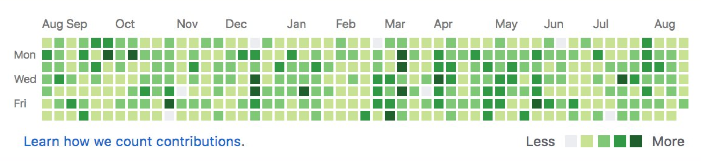
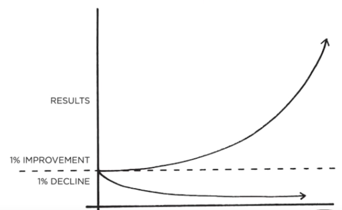

The plan
This guide will be very focused on minimalism: doing less, not more.
Outline:
Why you should become a front-end developer in 2020
-
Salary
-
This is a profession that is very well paid and you won't have to
worry about money.
-
You shouldn't do it just for the sake of money, because you're not
going to make it because web development is hard. If you go for the
money 99% of the times you will fail. You're not patient enough,
you're not resilient enough so the probability of success is very,
very low. SOLUTION: Learn through trial and error, the lighbulb will
go off.
-
Solving problems
-
Not only are you solving problems but you can do it creatively.
-
More fun than pure back-end since you get to work on many different
aspects of the product
- Design
- Performance
- Code
- Colors
- Typography
- UX
- Serverless
- Hot new tools
- Different frameworks
- You even need to interact with the client/customer.
-
A lot of what used to be done by "pure" back-end developers can be
done by front-end developers today.
-
Career opportunities
- Exponential room for growth
-
Much easier to get into because to learn back-end you have to
start with front-end first.
-
Harder to master because there are so many new tools, you have
so many different variables, which results in more complexity.
-
It's always going to be chaotic and newbies have an advantage.
You can start today and go in hard and learn and be actually
hireable in the marketplace. If a developer starts learning
today he/she will be obsolete in 2-3 years because things are
changing so rapidly.
-
This is probably the worst time to become a web developer in
terms of difficulty because today there's a lot of tools, ways,
frameworks, languages, paradigms to do things for front-end and
things are changing so rapidly.
-
This also makes it the best time to get into the field if you're
willing to put in the hard work and invest into it 100% because
the payoffs are so well worth it.
-
There's always going to be high demand for good front-end
developers because there's always going to be chaos. Developers
become obsolete if they don't stay in the game for a few years.
Computer science
Estimated time required: 50 hrs
It's highly recommended to start learning computer science and not jump
right into web development. You're going to feel like you're going slow
but you're actually going fast.
CS50 by Harvard is the best CS course on the planet. Link
here. You don't need to go through all of it, go through the first few
sections.
The most important sections:
-
algorithmic section: where they talk about sorting algorithms, searching
algorithms
-
the computer science part: where they talk about the history of computer
science, how computers work, compiling, abstraction, bigO notation,
efficiency
Learn that first, it will make a lot of other things later down the road
much easier.
Preparation
Estimated time required: 5 hrs
It's highly recommended to get a bird's eye view, the macro view of
everything that's involved in the web development industry, then going
into all the technologies and getting a general sense, high-level overview
and understanding of all these technologies.
-
Take a look at the industry as a whole, look up all the technologies and
get a high-level understanding of all players involved
-
Understand what computer science is, what software development is, what
web development is and the differences between all of them
-
How the web works, what is http, what is a server, what is a client,
their relationship, etc
The reason why you do that is because if you skip learning the
fundamentals and you try to go fast you're going to crash and burn.
Everything is built on layers: on the very bottom you have computer
science, and then you have software development, and then you have web
development, and then you have front-end development, and then you have
the languages such as JavaScript, and then you have the core JavaScript,
and then you have a layer of design patterns, and then you have React and
other frameworks.
Take it slow, work on the foundation.
HTML and CSS
Estimated time required: 100 hrs
HTML
HyperText Markup Language
- Content
- Words, text
- Images
- Videos
- Paragraphs
- Structure
CSS
Cascading Style Sheets
- Colors
- Design
- Layout
- Animations
- Positioning
- Responsiveness
Best resources to learn
-
MDN documentation.
Mozilla Developer Network
is 100% free.
-
Go through a book. The best way to learn anything, on any subject, at
any point in time is going through a good book. Not courses, not videos,
a good book. That's it. HOMEWORK: search for a good HTML/CSS book that
is up-to-date.
-
Be very careful on YouTube, it's very easy to waste your time on crappy
tutorials. Avoid crash courses unless you're sure you know why you're
doing it. Crash courses give you this illusion, this false sense of
accomplishment that you have learned so much. In reality you haven't
learned anything and you have this false sense of accomplishment and
that you should know all this things. What that does is that when you
actually get down to building a project you have no idea how to build
anything or how to do anything because you just have a weak
understanding of the general things. That kind of kills your confidence
because you think you should be able to do it but you don't. However,
later, when you've learned all that and then you want to refresh your
memory crash courses are amazing for that. A crashcourse video of 1 hour
- if you watch it on YouTube on 1.5x or 2x speed is amazing for
refreshing your memory and then getting an overview understanding of
things. If you're a beginner it's highly not recommended going through a
crashcourse, but rather go through the documentation and take things
very slowly.
-
If you're going for free material, make sure they're not wasting your
time. There's an abundance of information today and the number 1 asset
you have is your time and that's really what you have to pay attention
to - make sure you're not wasting your time and focus and energy.
How you should go about learning it?
-
Learn the basics of the languages from a book or the first few things
that come on Google (such as
MDN)
-
Go to your favourite websites, whether it would be Google, Facebook,
Reddit, Dribble and curate all the microcomponents that you like from
these sites.
-
Curate everything that you like and have list of components. These
websites are just a combination of small components. They have a search
component, a login component, a sign up component, a navbar component, a
hero image component, a contact form component, a footer component, an
image slider component. When you know how to build these then you know
how to build all of these then you can build any large sites. It's like
putting together lego pieces, don't just go for a huge website and then
try to create that because you're not going to learn anything: that's
going to be too overwhelming and then when you build it you're probably
gonna build it through a tutorial, you're going to copy it all and then
you get that false sense of accomplishment. You think you have a project
but you know deep down you didn't really do anything - 80% of it you
didn't really get it and the things you got from the 20% that's still
weak. Pick something atomic, something very very small, like a navbar,
or just that hamburger icon, or just a contact form, or a footer, and
then just start building that with just HTML and CSS.
-
Learn layouts, positioning, flexbox, grid, box model, specificity. The
most important thing here is learning how to build layouts - if you
learn that part you will really understand CSS. How does my code
translate into that? That's where the layout comes in. Start off with
flexbox, grid will be easier to pickup if you understand flexbox well
enough.
-
Start building. Take it one step at a time and start building, don't try
to be perfect and learn about all the HTML and CSS there is on the
documentation and then start building. NO: by the time you start
building you're going to forget most of them. As you're learning learn
something cool and build something with it.
-
Build one or two things, or three. Start building. And then repeat.
The Process
-
Find: Look for atomic micro-projects to build. For example: navbar,
different navbars, hamburger, header, hero, contact form, footer, etc
-
Learn and build: Don't think. Start coding. Look up tutorials on how to
build a specific thing and start coding. Knowing without taking action
is not knowing. OBS: Now you have these micro-components, learn how to
build them and actually build them. Once you're gone through a tutorial
throw that tutorial away and build something that you have learned from
this tutorial (if not 2 or 3) on your own. Don't just keep learning.
That's the tutorial purgatory, that's the hell that you don't want to be
in. See: false sense of accomplishment and learning - you haven't
learned, it's just a fake, a fantasy, so be very careful of that.
-
Repeat: Building something once is not enough. You need repetition. A
lot of it. Building multiple navbars, footers, heros, hamburgers,
contact forms, etc OBS: You need a lot of repetition, that's the point.
More HTML & CSS
- Responsive Design, Fluid Design, Media Queries
-
Typography, Fluid Typography, Responsive Typography OBS: find the
difference between them.
-
You don't need to get too deep into it, just get a general sense of it
and try using it. Every time you're building something focus on
typography, focus on the responsive part, focus on making it fluid. Pick
one and then do that, start implement it. Learn a little bit and start
implementing right away. That's the instant feedback after learning
something and that is what really solidifies your knowledge and you
actually learn.
- CSS is easy to get started, difficult to master
-
Some "full-stack" developers with years of experience are not able to do
very simple things in CSS. OBS: CSS is a very, very valuable skills.
With just HTML and CSS you can do so many things. EX: for email
development it's all HTML and CSS. You can get a job with just HTML and
CSS for email development. OBS: Many fulls-stack developers suck at
design, suck at CSS, they can write CSS but write really shitty CSS
code. Don't be one of them. Don't try to be full-stack. Just do one
thing and that one thing well and people will hire you when you say you
can do one thing and do that thing well.
- Take your time. Learn it slow. Learn it well.
-
If you go fast, you will crash. OBS: Slow is fast because knowledge
compounds.
Road to failure: weak fundamentals, trying to learn all these tools and
trying to go fast. That's why you also shouldn't touch any CSS frameworks
like Bootstrap, or Bulma, or anything like that. If you learn CSS really
well you can pick up Bootstrap in a day or even in a few hours. Even then
you're not going to want to write in Bootstrap or Bulma because you would
have to fix so many things and undo CSS, so you're not even going to use
it. That's where you want to be and the only way to get there is by going
slow.
Again, the process is: find, learn+build, repeat. Enough repetition will
make it a habit and enough repetition of habit will make it an instinct.
When it's an instinct - that's when you're dangerous.
When to move on
-
You have built over at least a dozen micro-components without JavaScript
- You have built at least 5-10 single and multi-page websites
-
You are comfortable with CSS fundamentals, positioning, flexbox, grid,
media queries, etc
-
If I gave you a mockup today you should be able to implement that and
make it live. 90-95% of the mockups out there you should be able to just
build it. Anything you see in design you should be able to write in HTML
and CSS and make it live and the only way to be getting there is by
repetition. Focus on these words: at least.
-
If I told you to make a simple navbar that collapses responsively in
mobile and tablet, it should take you no more than 15 minutes
-
IMPORTANT: Spend at least 100 hours learning and building things with
pure HTML/CSS. 49% learning. 51% building. OBS: you should be building
more than just learning. Always be building more, coding more. Again,
learning without practice is not learning.
Git. GitHub. Command line
Estimated time required: 10-20 hrs
You should be using these things every day while you're doing HTML and CSS
and while you're doing JavaScript in the future. These are tools that you
just need to learn, you're going to be using them all the time.
What?
- Git: a Version Control System
- GitHub: a website with VCS (git) in the cloud
-
Command Line Interface: an interface or a means to interact with the
computer in which you type your instructions rather than point and
click. OBS: on Windows machine use git bash or download the Linux for
Windows subsystem; use the Linux or Unix shell instead of the Windows
native shell.
How you should go about learning it?
- Git documentation or YouTube
- For CLI, YouTube or documentation
-
If you're on Windows, install git bash on your computer and start
learning unix shell. Don't use powershell. You can also install linux
bash (ubuntu) on Windows and do it that way. Git bash is easier.
-
As you're building projects, practice with Git, GitHub and CLI and keep
pushing to GitHub. A lot of employers now look up your GitHub profile to
see your work. OBS: you should be always deploying your projects there
so everybody can see your code and progress and also you're documenting
your journey for your self, which is amazing.
JavaScript
Estimated time required: 400 hrs
" Everything that can be written in JavaScript will be written in
JavaScript. " - Jeff Atwood
What is JavaScript?
-
Functionality. Interactivity. Form submissions. Buttons. Advanced
animations. Logic. Games.
Best resources to learn JavaScript
-
Books. [most recommended, way better than courses]. If you really want
to learn JavaScript go through a book.
-
Eloquent JavaScript. 3rd Edition. Read it online
here.
-
You Don't Know JavaScript. Read it online
here.
- MDN Documentation
-
YouTube (free courses). Again, be careful not to waste your time on crap
tutorials. Some good channels: Traversy Media; Wes Bos; Level Up
tutorials; Whatdev. Note: touch and leave, don't go in there and try to
learn everything about JavaScript from there. While going through a
book, when you learn something, then when you have to learn something
specific and you want to augument that learning with something else then
you want to watch a specific video on YouTube. Ex: JavaScript design
patterns, if-statements, closures, scope. Even later when building a
project: look for a specific project to build, whether it would be Rock,
Paper, Scissors or a clock; pick that specific project, build it, leave,
go back to the book. Don't do courses after courses on YouTube!
-
Spend more time on in-depth blog tutorials for projects. They'll be well
written and more updated. NOTE: Instead of YouTube it's highly
recommended to go through written articles on blogs. They will be well
written and more updated [you cannot edit videos on YouTube].
-
Everything that you want to learn is for free, you can do it for free,
you just have to pay in time, effort and energy. Courses are just
cutting that, that's why you're paying.
Two Things to get good at programming and JavaScript
These two things are THE things that you should be always looking to do.
If you are not doing these two things it doesn't matter, you're not
getting better and you're not understanding a thing.
-
Solve algorithmic challenges.
- Do that every day, solve as many as you can.
- Most people avoid this. Don't.
-
It's going to be tough in the beginning. The only way is through.
-
This will help tremendously and will teach you how to think like a
programmer. That's why you learn computer science, that's why you
learn this. And when you're building projects this knowledge is
going to come into play alot. You're going to be able to figure out
everything very easily. And then there will come a point where
you'll be like: I can do anything, even though I don't know how to
do that thing yet, but I know I can figure it out. That's where you
want to be.
-
-
Build projects. If you're not doing algorithmic challenges, you're
building projects.
-
Algorithmic challenges will help you with the logic when it comes to
building projects.
Don't quit
You need to sit with the problem longer. Fall in love with the pain. NOTE:
applies to the algorithmic challenges. Don't give up too quickly when you
learn how to code. Don't just give up after 10 minutes. Sit with the
problem, over time your ability to focus and stare at a problem improves,
and then it gets easier and easier. Then you go into this god mode where
any problem you see, even when it's hard, you can figure it out. Just lay
down that one brick at a time, then you're like ok I've got this, process
of elimination, I can't use this, I can't use that, that doesn't make
sense, maybe an object here - no, it doesn't make sense; maybe a variable
- no, it doesn't make sense, etc That process, that thought pattern - that
stuff takes time to build, so don't give up. You don't suck, you just
don't stay with the problem long enough.
When you're doing research on a project, don't quit when you can't find
the solution to your problem within the first few pages. Go through dozens
of resources until you find them. It's not a question of whether the
solution is there. It's if YOU are going to find the solution. NOTE: when
you're debugging your project and you can't seem to figure out how to
implement a certain feature - if you give up just know that you just
sucked at not being able to find that solution. The solution is there,
online; you just gave up too easily.
The process
-
Start with a book or/and a good course. If you're going through a
course, just make sure the course is good and it's not a buffet. Pause
and think about the purpose of the course. NOTE: If you do too many
things you end up not doing anything well. A lot of the courses out
there just promise everything - that's the number 1 sign that it is not
a good course.
-
Deviate away from the book/course once you have learned something new.
Think about what's something small you can create with what you've
learned immediately. Work on that. Come back and continue. NOTE: When
you're going through a book make sure that you're abandoning your book
periodicly when you have learned something and then build something with
it. Again: learn-build, NOT learn-learn-learn-learn-build. Always be
building continuously.
- Do 1 to 3 problems/projects for every 1 topic in a course.
Major Keys
-
JavaScript Fundamentals (data types, conditionals, functions, logic,
objects etc)
-
Build common micro components like modals, lists (todos, recipe lists),
navbar hamburgers, animations with JavaScript such as slides (off-canvas
sidebar(), gallery, side navbar, form logic; currency converter, unit
converter, temperature converter; rock-paper-scissors; digital clock.
OBS: find small things that you can build and then build those things
one at a time. Don't try to build a huge project right from the get-go
because even if you do build it you're probably going to copy somebody
and then you get that false sense of accomplishment again, where you're
not learning anything, it's the illusion that you have learned something
and that messes your confidence up. Build those small things and keep
building, because a big project or a website is just a combination of a
lot of small things and if you know how to build these small things at
the end of the day it's just lego pieces.
-
Ajax, Promises, Async Await, ES6+. OBS: it's really about the core
problem solving skills for JavaScript and understading that.
-
Prototypal Inheritance, OOP, difference between them. OBS: this is the
stuff that starts getting a little bit harder. You will learn OOP in
JavaScript and you think that you'll understand it, but 2 months later
you'll think you don't get it, then you'll relearn it and then you'll be
like "I get it", and a month later you'll go "I don't get it." That's
why it's so important that you follow up everything that you learn with
some sort of project or problem. Keep coding, keep building. Don't just
learn or watch a video because you're not really learning.
-
Pure functions, functional programming, design patterns.
-
Go through a fucking book!
Build small things
-
A large website like Amazon or Facebook is a combination of small
components. Example: login form, sign up form, navbar, like, comment,
make-post, animation, stories, checkout, add to cart, search,
autocomplete, etc
-
But if you're going to build anything and anything small, no matter how
small, you better make that shit good. If I'm going to hire you, you
don't need to be the best but you better be good at whatever you say
you're good at or have built already.
-
OBS: It's gotta look good, it's gotta feel good, it's gotta work, there
can't be any bugs. Almost every junior developer out there and every
beginner developer out there - their projects are just ugly, most of
them are just plain ugly. There's always a lot of errors: the plus icon
doesn't work, or it's crooked or some weird stuff happens. SO ALWAYS
refactor your code. Don't just finish something and go "i've built it,
now I'm going to go to the next one". Keep looking at that project and
make it sexy and keep adding more functionality. Again: build your own
from scratch, maybe two, maybe three - that's how you actually learn.
Larger projects
Don't overthink this. Look at websites that are already built and make a
mini clone of it with the major functionalities.
OBS: jump into larger projects once you have built a lot of
microcomponents (like 12+), then you're going to transition very smoothly
- An e-commerce site like Amazon
- A forum like reddit
- A social media site (like Facebook, Tiktock, Twitter)
- A music player app like Spotify
OBS: at this stage you don't have any knowledge of back-end so you're not
going to be able to build a website like Amazon which has databases and so
on; BUT you will be able to build the front-end component of it without
the back-end functionality OR you can just store it in local storage (so
learn how to use local storage)
Misconception: Large doesn't necessarily mean the number of pages or
components. It depends on the complexity. If you still don't get it, don't
worry. If you have done all the aforementioned things/projects, you'll
understand at that point.
Design Patterns
Don't touch any frameworks!
Build at least 10 projects using pure JavaScript. The day you touch
jQuery, React, Angular, Vue before you're ready, you have just shot
yourself in the foot and slowed down your rate of progress incredibly.
Learn about different design patterns, why they're important. Constructor,
Module, Prototype, Factory, Observer, Facade, Adapter etc OBS: pick 3-5
and study them. You can learn all of them if you're really passionate
about it but 5 it's enough: get the general overview of it, high level
understanding of what they are and do some microprojects with that. EX:
try to implement a ToDo list app with one of these patterns. Not just
what, but really understand why - the why is way more important than what
or how.
Checklist
- Build at least 8-10 micro projects
-
Solve at least 50-100 programming algorithms. Easy to intermediate.
- Understand JavaScript fundamentals well
-
Understand few of the common design patterns and why they're important,
how they help
-
Don't just make it work. Make it right. OBS: that's another thing when
it comes to courses. Most of the courses out there never teach you the
right way to do things. They just teach you how to build something but
it's shit code.
- Learn Webpack at some point. You'll know when.
SLOW === FAST
Money
Make $1k-$3k a month
You can start making money on the side very easily [citation needed...].
Start tutoring and teaching + freelancing.
NodeJS. Express. Mongo.
Estimated time required: 100 hrs
OBS: 100h is enough to get a solid understanding of the back-end,
databases, etc
NOTE: you must learn the back-end if you want to be a good front-end
developer
What is NodeJS
A JavaScript runtime, not a language, not a framework/library.
This allows you to write JavaScript outside of the browser which means you
can do much more than just create web apps.
OBS: JavaScript is a web language, only a web browser can understand the
JavaScript code. Outside of that no device can understand JavaScript
unless you actually install a browser like Chrome.
Overview
-
JavaScript is a language. And you write that in a file with the
extension ".js". BUt you need a web browser to understand and run that
code. A web browser contains a "runtime" environment which includes a
program (V8 engine) which includes an interpreter that can understand
and execute your ".js" file.
-
NodeJS is just a program that also contains a "runtime" environment with
the V8 engine. But this time, this "runtime" environment has extra
features added that allows it to be understood outside of just the
browser (computer, iPad, phone, robots, machinery, etc)
Why?
If you want to be a great front-end developer, you must learn the
fundamentals of back-end or server-side programming.
Dynamic Data allows you to build more "advanced" websites with custome
data stored in a database in a server. (blogs, Facebook likes, comments,
videos). OBS: Server-side programmer is all about data persistence. When
you refresh: if you just do front-end that information goes away (you can
put that into local storage but even then if you refresh and delete your
cookies it goes away). if you have a database and you learn server-side
programming you can actually store that securely somewhere in a server, in
a database and authenticate it and bring it back when you need it.
How?
- Learn how to build APIs (API = Application Programming Interface)
- Understand the difference between API and REST API
-
MDN documentation is your best bet; YouTube crash courses; blog
tutorials. OBS: just make sure you're not wasting your time, just make
sure it's a good tutorial
-
Express.js, databases (MongoDB). OBS: Express.js is a Node.js framework.
Highly recommended to go with MongoDB instead of SQL.
-
Build a todo list with a database so it doesn't dissapear upon refresh
-
Blog, build anything that takes data from front-end and stores data in
the back-end
OBS: once you have learned Node.js try to build a little bit more projects
3-5, maybe even 10. At this point if you have done all the things in the
past it should take you a lot less time to build projects, you should be
busting out projects every 2 days or something, it should be so easy for
you. At this point you should be flying through tutorials. You should have
this deep confidence in your heart that you can figure it out.
React
Estimated time required: 100 hrs
IMPORTANT: before jumping into React make sure you understand JavaScript
and make sure you go through design patterns.
Many frameworks
-
Decide. Stop overthinking and debating on which framework is the "best".
OBS:
- There is no "best"
-
Options is a terrible thing. It causes paralysis by analysis. STOP.
- Start learning and building.
- You learn one well. Done.
- I recommend React. More demand. Done.
Why?
-
Helps you build JavaScript applications faster. More scalable and
maintainable.
-
You can do everything with pure JavaScript. Doesn't mean you should all
the time.
-
There's a reason why frameworks exist. Learn why. Don't just jump into
it. Learn the WHY.
Flow...
If React.js seems hard and you find yourself frustrated and you don't seem
to "get it", it's not a React problem. It's a pure JavaScript problem.
OBS: most likely your understanding of pure JavaScript is very weak.
You should feel excited while learning React.js.
You should constantly be having thoughts like: "Whaaaat? This is all I
have to do?" "Oh my God! No more state|UI sync nightmare"
State and UI
One of the main reasons we use these modern frameworks is because keeping
the state (your data) in sync with UI (your view) is very hard, especially
as your app grows.
For this, if you use pure JavaScript, you have to use specific proven
design patterns to build applications for scalability and maintainability
long term.
OBS: you can definitely do it with JavaScript but sooner or later as your
app grows bigger you will end up creating a framework like React because
you want it to be scalable and maintainable over the long run. This is
really why React and these frameworks exist: to make this easier, so that
you can build JavaScript applications faster.
Build
Everything you have built with pure JavaScript thus far...
implement all of them with React.
Learn Redux.
Job ready
Start applying to jobs like a mad man.
Now at this point you are job ready. If you have done everything, you have
spent the time, you have put in the work - you are job ready. All the
other things are not important. Whatever you might see on the job
applications: years of experience, etc - it doesn't matter. If you have
invested the time and the hours - it doesn't matter. A person can spend a
year learning JavaScript but just 1 hour coding every week. That's 52
hours in a year. Somebody can learn JavaScript for 6 months but spent an
average 10-12 hours every day. That's 1800 hours.
Before you apply
-
Have a simple yet beautiful portfolio that showcases everythin you know.
Don't tell me. Show me.
-
Design matters. Go to sites like Behance, Dribbble and look at
phenomenal designs by great UX designers and up your "eye-4-design".
OBS: you're not born with an eye for design, it's all made. Your mind is
like a computer storage. As it lets in information that's how you form
your thoughts, your taste, your eye for design. Go to these sites and
look at professional web designers are doing. Don't trust your gut,
don't think you're good at design because you're not. At any point in
time when you think you're good just know that you suck. It's the
Dunning-Kruger effect.
-
Work. Confidence is a memory of working hard and winning. Have massive
work under your belt and nobody can say shit. OBS: When you grind, when
you hustle - that deep layer of confidence cannot be taken away from you
by anyone. This kind of confidence is a huge advantage.
Your GitHub Activity
Your GitHub activity should look like this:

Your heat map on your GitHub profile should look something like this
throughout the whole year.
Work
At the end of the day you gotta have a good product. In this case the
product is yourself and your skillset. Tell a good story.
- 10+ micro projects
- 1-2 large projects
-
You have to write case studies for one or two of your projects where you
talk about what you learned, the journey, the obstacles, cool things you
tried etc. What were you thinking before tackling this project? What did
you learn afterwards? What did you go through during?
OBS: even when you're freelancing you have to have case studies of
projects, not just testimonials.
OBS: Tell a story. It doesn't have to be long either. As long as you hit
the points it can be short and still be a case study, but usually case
studies are longer.
-
100+ algorithmic challenges solved. OBS: at this point if you're doing
things right you would have solved 100+ easily. Even when doing projects
you are solving algorithmic challenges, you have to solve them. A bunch
of little algorithms it's like problem solving and then that builds the
project.
Job Guarantee Process
-
Apply to at least 20 jobs every day. That's 300 in a month. Even if you
convert at 1%, that's still 3 jobs. Most people don't apply enough. Be
ready to move to a different location.
-
Don't worry about not qualifiying. Still apply as long as it's somewhat
similar. You can learn things quickly. OBS: at this point you can learn
any technology whether it would be coding language or whatever it is,
you can learn it pretty easily.
-
Just keep applying. Apply like a madman. Apply, apply, apply - as long
as it's somewhat similar. If it says you need two years and you only
have one month of React just apply and at the interview just say "I've
done only one year but I've spent three times the amount of hours than a
regular developer who is learning React might spend. Stress on that,
highlight your strengths, not your weaknesses.
-
If you have followed all the process so far and you haven't landed a job
in 6 months of doing this, hit me up. I'll give you a job.
Dream Job Process
Sophisticated Monkey Method
-
Select 3-5 companies you would love to work for. Learn about them.
Profile them. Profile their decision maker. What do they exactly want?
Make a strategy. NOTE: hit them up on LinkedIn if necessary. NOTE: you
find peace by going right throgh the problems.
-
Send a direct message or personalized email to the decision maker and
take them to coffee. Jab Jab Right Hook. Can't land the hit if you don't
jab. Never. Ever. NOTE: Success is the result of good design. When you
are jabbing you are making that design, you are setting yourself up for
success, you are designing your flow of success and you are increasing
the probability, your chances of being successful. Landing that hook =
getting the job.
-
What can you do to stand out? Be more personal. More human. Do you
really give a shit? NOTE: giving a shit + hard work are a crazy
competitive advantage.
Look for this book: Cal Newport - "So Good, They Can't Ignore you". Highly
recommended. Have work projects and things under your belt, work hard.
When you have that nobody can say shit.
Solidify. Explore.
Estimated time required: 100 hrs or indefinitely.
NOTE: while applying for jobs don't stop exploring. Keep exploring, keep
learning things, because happiness is linked to progress. If you don't
evolve you end up miserable. Every time you're miserable and unhappy is
because you're comfortable.
Don't settle for enough
-
Polish your understanding of CSS and JavaScript. NOTE: the difference
between master and noob is that the master knows how to use those same
tools in way more different scenarios. A junior developer just copies, a
senior developer knows what to copy.
-
Learn SASS. Learn BEM. NOTE: BEM = Block Element Modifier, it's a CSS
methodology, it helps you write CSS in a cleaner way. If you understand
CSS well learning SASS will take 2 days.
-
Build larger React/Redux projects. NOTE: build more, keep building more,
keep applying to jobs.
- Security. Performance. SSR.
-
Serverless is the future. GatsbyJS. NOTE: JAM Stack is also really good.
- Learn a new language like Clojure, Scheme or C++.
- Learn/build things that excite you.
Congratulations
If you have made it this far, you're in the very small minority of people
who didn't give up and actually made it through.
Most people have given up at this point. It makes sense. It's hard work.
But you love hard work. We love hard work. Hard work is our competitive
edge.
Decision
I would start. Then quit. Start. Then quit again. And my progress just
oscillated to a zero for so many years.
NOTE: take your time, ask yourself if you really want to do this. But when
you have made that decision - commit. Don't try to do any new idea, don't
jump to any new ideas. Just say: for the next 2 years I'm just going to do
this. I'm going to breathe, eat, sleep, live, this thing. And you will
make it. You've got to be obsessed.
Then I committed. I decided. One thing.
NOTE: I've been dabbling too much, but then I've committed. Magic happens
when you focus and just go crazy, like a maniac.
Certainty
- Most people fail to take action because of uncertainty.
- Uncertainty means you got doubt
- Doubt means paralysis by analysis
- Paralysis equals inaction. Lack of action equals guilt.
- Now you've got the cocktail of the devil.
Don't quit. I'm telling you right now that I'm certain each and every one
of your faces can make this happen. NOTE: if you do the things in this
plan and you put in the time and you think (not hear and follow, not just
monkey hear monkey do) -> you'll make it.
Action
The beauty of action is that it's loyal.
NOTE: You work, you'll get results. It doesn't care about your history.
You could be a looser for the past 10 years, but today, now, when you
start acting you start getting results immediately.
Compound interest is the 8th wonder of the world.
Success = micro work x time^2
NOTE: remember that knowledge compounds as well. If you just do small
things every day, just one small atomic thing every day - that's it,
you'll be successful, and it compounds. In the beginning it will look like
you're not getting anything done, but there will be a point where
everything just happens at once. Overnight success is not really overnight
success. One percent improvement and at the end you have this crazy growth
rate. That exponential growth happens because you're consistent every day.

There's now work as small work. If you skip one day it doesn't really mean
that you're pushing your success by one day. You're actually taking the
momentum out of that equation and now you're pushing the success for a
week. If you skip for a week you're not actually pushing your end goal for
a week, you're actually pushing it by multiple weeks or multiple months.
Conclusion
-
Work 800-1000 hours. NOTE: it can take way more than that if you waste a
lot of time in the beginning. But when you actually start you're solid
after that number of hours.
- Sleep at least 7 hours a day
- Don't rush. Life is long.
-
Have fun while doing it. If Victor Frankl can find peace/happiness in
the camps, you can definitely do it while learning to code. Worldview
matters.
-
Every single one of you can do better than me. Question is "Are you
going to put in the work?"
- Don't just do it for the money. You won't last.
Bonus
- Unfollow everyone on Instagram and social media.
- Disable ALL NOTIFICATIONS on your phone except for phone calls.
- Hit the gym. Eat cleaner. Sleep.
- Sacrifice. Going out. Drinking. Vacations. Parties.
- Go to meetups and find like-minded people.
- Your environment is the ultimate predictor of your success.
- Success is the residue of good design.
Estimated TOTAL time required: 865-875 hrs